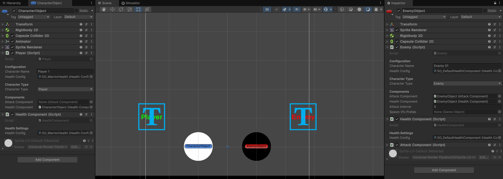
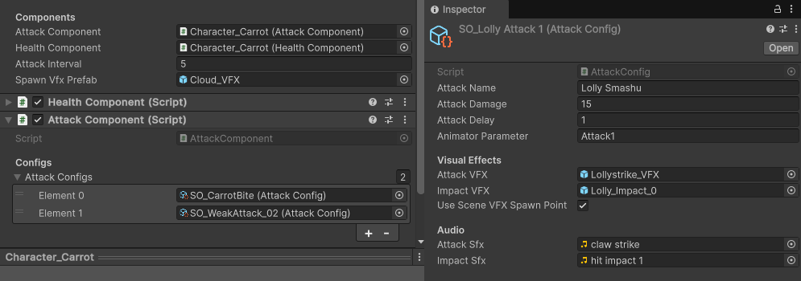

Candy Dandy
Status: Finished
Type: 2D Mobile Game
Duration: 3 Months
Engine: Unity
Language: C#
Roles: Programmer, Scrum Master
Team: 3 Developers, 5 Artists
About Candy Dandy
Candy Dandy was our final exam project at Mediacollege, bringing together both Game Development and Game Art students under a real client brief. The goal: create an innovative match-3 mobile game where the match-3 mechanic directly influences a secondary gameplay layer. Our client, Ramses Di Perna — a Game Developer at Azerion and an alumnus of our college — guided us through the process. View on GitHub
My Features
- Designed and implemented Character Classes
- Built the Combat System
- Handled Canvas & UI scaling for mobile
Project Kickoff
The project started with a briefing from three external clients. After discussing preferences as a group, we got our first choice. We reached out to our client, asked questions, and exchanged contact details to keep them updated. On the first official day, our team brainstormed ideas. Some leaned towards a dating sim, others towards a cake-baking sim, but the other two developers and I pushed for a fighting game concept.
We had internal disagreements about orientation: some preferred landscape, others portrait. One of our artists created a mockup for both concepts to present to the client for feedback. Ultimately, we chose the fighting game in portrait mode — which fit the brief better and balanced dev and art workload.

Concept 1: Portrait — matching and fighting on the same screen.
Concept 2: Landscape — full-screen matching with a transition to fighting cutscenes.
Development
Once our concept was clear, we organized the Trello board with user stories and prioritized the core mechanics. I focused first on the character system. Since our game revolves around PvE combat, I designed a `Character` base class to provide shared properties like health, attack, and death logic for both Player and Enemy classes.

The `Awake` method in `Character.cs` checks for `Attack` and `Health` components. If none exist, they’re assigned default settings automatically.
Once the Health system was finished — which naturally includes damage logic — I could start replace all placeholder code in Character.cs to real, modular systems.
With this, every character that inherits from Character.cs can now take and deal damage through a shared HealthComponent logic, keeping things clean and reusable.
The AttackComponent class started as a simple enemy AI — I gave each enemy a list of doable / performable attacks and logic to pick one at random per interval. Once it became clear enemies will have pre-defined attack patterns i switched out the List for an Array since its more performant in this case. Early on, this was hardcoded to just enemies but after seeing how flexible the health system is with its component like hierarchy, I refactored it: attacks became fully configurable, reusable assets in the form of ScriptableObjects as well.

The ScriptableObjects with Configuration settings for Health on the left.
Attack configurations on the right.
AttackConfig works like a recipe: it defines damage values, visual effects, and sound effects which are the ingredients before its a complete dish.
This made it easy to tweak enemy behavior directly in the editor without rewriting code — adding new attacks is just a matter of creating a new AttackConfig.
For the player side, it uses the same AttackComponent, it just has a different trigger to perform attacks : every match made triggers the player’s Attack() method.
Early playtest version — no grid visuals yet. Originally, we used both a round timer and player health, but feedback showed that having both was distracting. We replaced the timer with a round manager displaying the current round instead.
The VFXComponent was added separately to handle visuals like hit effects, damage sparks, or impact flashes.
It’s not inherited directly by the base Character class, but attached only to characters that need it.
This keeps it modular and easy to disable or swap if needed.
Finally, for special attacks — which needed to sync normal attack logic with unique VFX and combo conditions — we pair programmed the SpecialAttackController to tie it all together.
My colleague handled most of its logic while I made sure it worked smoothly with my AttackComponent and VFXComponent.
The attack system works like a simple cause-and-effect chain. Enemies pick from a small, predefined set of attacks at random, while the player’s attacks are tied to match-3 input. Technically, an attack follows this flow:
Conclusion
Candy Dandy taught me a lot about working in a team without a strict lead and balancing tasks across disciplines. It was my second attempt at mobile game development — and my first successful one. A key takeaway was learning about Safe Areas on mobile devices and how to use Safe Area Handler scripts to handle them properly. I also gained valuable insight into placing important UI elements so they stay functional and clear on small, portrait screens.